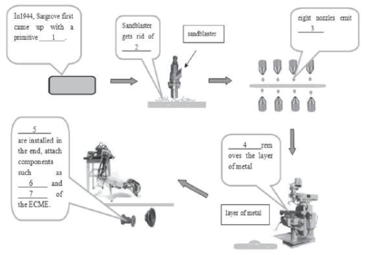

Part 1
READING PASSAGE 1
You should spend about 20 minutes on Questions 1-13 which are based on Reading Passage 1.

Radio Automation
Today they are everywhere. Production lines controlled by computers and operated by robots. There’s no chatter of assembly workers, just the whirr and click of machines. In the mid-1940s, the workerless factory was still the stuff of science fiction. There were no computers to speak of and electronics was primitive. Yet hidden away in the English countryside was a highly automated production line called ECME, which could turn out 1500 radio receivers a day with almost no help from human hands.
A. John Sargrove, the visionary engineer who developed the technology, was way ahead of his time. For more than a decade, Sargrove had been trying to figure out how to make cheaper radios. Automating the manufacturing process would help. But radios didn’t lend themselves to such methods: there were too many parts to fit together and too many wires to solder. Even a simple receiver might have 30 separate components and 80 hand-soldered connections. At every stage, things had to be tested and inspected. Making radios required highly skilled labour—and lots of it.
B. In 1944, Sargrove came up with the answer. His solution was to dispense with most of the fiddly bits by inventing a primitive chip—a slab of Bakelite with all the receiver’s electrical components and connections embedded in it. This was something that could be made by machines, and he designed those too. At the end of the war, Sargrove built an automatic production line, which he called ECME (electronic circuit-making equipment), in a small factory in Effingham, Surrey.
C. An operator sat at one end of each ECME line, feeding in die plates. She didn’t need much skill, only quick hands. From now on, everything was controlled by electronic switches and relays. First stop was the sandblaster, which roughened the surface of the plastic BO that molten metal would stick to it The plates were then cleaned to remove any traces of grit The machine automatically checked that the surface was rough enough before sending the plate to the spraying section. There, eight nozzles rotated into position and sprayed molten zinc over both sides of the plate. Again, the nozzles only began to spray when a plate was in place. The plate whizzed on. The next stop was the milling machine, which ground away the surface layer of metal to leave the circuit and other components in the grooves and recesses. Now the plate was a composite of metal and plastic. It sped on to be lacquered and have its circuits tested. By the time it emerged from the end of the line, robot hands had fitted it with sockets to attach components such as valves and loudspeakers. When ECME was working flat out; the whole process took 20 seconds.
D. ECME was astonishingly advanced. Electronic eyes, photocells that generated a small current when a panel arrived, triggered each step in the operation, BO avoiding excessive wear and tear on the machinery. The plates were automatically tested at each stage as they moved along the conveyor. And if more than two plates in succession were duds, the machines were automatically adjusted—or if necessary halted In a conventional factory, I workers would test faulty circuits and repair them. But Sargrove’s assembly line produced circuits so cheaply they just threw away the faulty ones. Sargrove’s circuit board was even more astonishing for the time. It predated the more familiar printed circuit, with wiring printed on aboard, yet was more sophisticated. Its built-in components made it more like a modem chip.
E. When Sargrove unveiled his invention at a meeting of the British Institution of Radio Engineers in February 1947, the assembled engineers were impressed. So was the man from The Times. ECME, he reported the following day, “produces almost without human labour, a complete radio receiving set. This new method of production can be equally well applied to television and other forms of electronic apparatus.
F. The receivers had many advantages over their predecessors, wit components they were more robust. Robots didn’t make the sorts of mistakes human assembly workers sometimes did. “Wiring mistakes just cannot happen,” wrote Sargrove. No w ừ es also meant the radios were lighter and cheaper to ship abroad. And with no soldered wires to come unstuck, the radios were more reliable. Sargrove pointed out that the drcuit boards didn’t have to be flat. They could be curved, opening up the prospect of building the electronics into the cabinet of Bakelite radios.
G. Sargrove was all for introducing this type of automation to other products. It could be used to make more complex electronic equipment than radios, he argued. And even if only part of a manufacturing process were automated, the savings would be substantial. But while his invention was brilliant, his timing was bad. ECME was too advanced for its own good. It was only competitive on huge production runs because each new job meant retooling the machines. But disruption was frequent. Sophisticated as it was, ECME still depended on old- fashioned electromechanical relays and valves—which failed with monotonous regularity. The state of Britain’s economy added to Sargrove’s troubles. Production was dogged by power cuts and post-war shortages of materials. Sargrove’s financial backers began to get cold feet.
H. There was another problem Sargrove hadn’t foreseen. One of ECME’s biggest advantages—the savings on the cost of labour—also accelerated its downfall. Sargrove’s factory had two ECME production lines to produce the two c ữ cuits needed for each radio. Between them these did what a thousand assembly workers would otherwise have done. Human hands were needed only to feed the raw material in at one end and plug the valves into then sockets and fit the loudspeakers at the other. After that, the only job left was to fit the pair of Bakelite panels into a radio cabinet and check that it worked.
I. Sargrove saw automation as the way to solve post-war labour shortages. With somewhat Utopian idealism, he imagined his new technology would free people from boring, repetitive jobs on the production line and allow them to do more interesting work. “Don’t get the idea that we are out to rob people of then jobs,” he told the Daily Mnror. “Our task is to liberate men and women from being slaves of machines.”
J. The workers saw things differently. They viewed automation in the same light as the everlasting light bulb or the suit that never wears out—as a threat to people’s livelihoods. If automation spread, they wouldn’t be released to do more exciting jobs. They’d be released to join the dole queue. Financial backing for ECME fizzled out. The money dried up. And Britain lost its lead in a technology that would transform industry just a few years later.
Part 2
READING PASSAGE 2
You should spend about 20 minutes on Questions 14-26 which are based on Reading Passage 2.

The Cacao: A Sweet history
A Chapter 1
Most people today think of chocolate as something sweet to eat or drink that can be easily found in stores around the world. It might surprise you that chocolate was once highly treasured. The tasty secret of the cacao (Kah Kow) tree was discovered 2,000 years ago in the tropical rainforests of the Americas. The story of how chocolate grew from a local Mesoamerican beverage into a global sweet encompasses many cultures and continents.
B Chapter 2
Historians believe the Maya people of Central America first learned to farm cacao plants around two thousand years ago. The Maya took cacao trees from the rainforests and grew them in their gardens. They cooked cacao seeds, the crushed them into a soft paste. They mixed the paste with water and flavorful spices to make an unsweetened chocolate drink. The Maya poured the chocolate drink back and forth between two containers so that the liquid would have a layer of bubbles or foam.
Cacao and chocolate were an important part of Maya culture. There are often images of cacao plants on Maya buildings and art objects. Ruling families drank chocolate at special ceremonies. And, even poorer members of society could enjoy the drink once in a while. Historians believe that cacao seeds were also used in marriage ceremonies as a sign of the union between a husband and a wife.
The Aztec culture in current-day Mexico also prized chocolate. But, cacao plants could not grow in the area where the Aztecs lived. So, they traded to get cacao. They even used cacao seeds as a form of money to pay taxes. Chocolate also played a special role in both Maya and Aztec royal and religious events. Priests presented cacao seeds and offerings to the gods and served chocolate drinks during sacred ceremonies. Only the very wealthy in Aztec societies could afford to drink chocolate because cacao was so valuable. The Aztec ruler Montezuma was believed to drink fifty cups of chocolate every day. Some experts believe the word for chocolate came from the Aztec word “xocolatl” which in the Nahuatl language means “bitter water.” Others believe the word “chocolate” was created by combining Mayan and Nahuatl words.
C Chapter 3
The explorer Christopher Columbus brought cacao seeds to Spain after his trip to Central America in 1502. But it was the Spanish explorer Hernando Cortes who understood that chocolate could be a valuable investment. In 1519, Cortes arrived in current-day Mexico. He believed the chocolate drink would become popular with Spaniards. After the Spanish soldiers defeated the Aztec empire, they were able to seize the supplies of cacao and send them home. Spain later began planting cacao in its colonies in the Americans in order to satisfy the large demand for chocolate. The wealthy people of Spain first enjoyed a sweetened version of chocolate drink. Later, the popularity of the drink spread throughout Europe. The English, Dutch and French began to plant cacao trees in their own colonies. Chocolate remained a drink that only wealthy people could afford to drink until the eighteenth century. During the period known as the Industrial Revolution, new technologies helped make chocolate less costly to produce.
D Chapter 4
Farmers grow cacao trees in many countries in Africa, Central and South America. The trees grow in the shady areas of the rainforests near the Earth’s equator. But these trees can be difficult to grow. They require an exact amount of water, warmth, soil and protection. After about five years, cacao trees start producing large fruits called pods, which grow near the trunk of the tree. The seeds inside the pods are harvested to make chocolate. There are several kinds of cacao trees. Most of the world’s chocolate is made from the seed of the forastero tree. But farmers can also grow criollo or trinitario cacao plants. Cacao trees grown on farms are much more easily threatened by diseases and insects than wild trees. Growing cacao is very hard work for farmers. They sell their harvest on a futures market. This means that economic conditions beyond their control can affect the amount of money they will earn. Today, chocolate industry officials, activists, and scientists are working with farmers. They are trying to make sure that cacao can be grown in a way that is fair to the timers and safe for the environment.
E Chapter 5
To become chocolate, cacao seeds go through a long production process in a factory. Workers must sort, clean and cook the seeds. Then they break off the covering of the seeds so that only the inside fruit, or nibs, remain. Workers crush the nibs into a soft substance called chocolate liquor. This gets separated into cocoa solids and fat called cocoa butter. Chocolate makers have their own special recipes in which they combine chocolate liquor with exact amounts of sugar, milk and cocoa fat. They finely crush this “crumb” mixture in order to make it smooth. The mixture then goes through two more processes before it is shaped into a mold form.
Chocolate making is big business. The market value of the yearly cacao crop around the world is more than five billion dollars. Chocolate is especially popular in Europe and the United States. For example, in 2005, the United States bought 1.4 billion dollars worth of cocoa products. Each year, Americans eat an average of more than five kilograms of chocolate per person. Speciality shops that sell costly chocolates are also very popular. Many offer chocolate lovers the chance to taste chocolates grown in different areas of the world.
Part 3
READING PASSAGE 3
You should spend about 20 minutes on Questions 28-40 which are based on Reading Passage 3.

Extinct: the Giant Deer
Toothed cats, mastodons, giant sloths, woolly rhinos, and many other big, shaggy mammals are widely thought to have died out around the end of the last ice age, some 10,500 years ago.
A
The Irish elk is also known as the giant deer (Megaloceros giganteus). Analysis of ancient bones and teeth by scientists based in Britain and Russia show the huge herbivore survived until about 5,000 B.C. – more than three millennia later than previously believed. The research team says this suggests additional factors, besides climate change, probably hastened the giant deer’s eventual extinction. The factors could include hunting or habitat destruction by humans.
B
The Irish elk, so-called because its well-preserved remains are often found in lake sediments under peat bogs in Ireland, first appeared about 400,000 years ago in Europe and Central Asia. Through a combination of radiocarbon dating of skeletal remains and the mapping of locations where the remains were unearthed, the team shows the Irish elk was widespread across Europe before the last “big freeze.” The deer’s range later contracted to the Ural Mountains, in modern-day Russia, which separate Europe from Asia.
C
The giant deer made its last stand in western Siberia, some 3,000 years after the ice sheets receded, said the study’s co-author, Adrian Lister, professor of palaeobiology at University College London, England. “The eastern foothills of the Urals became very densely forested about 8,000 years ago, which could have pushed them on to the plain,” he said. He added that pollen analysis indicates the region then became very dry in response to further climatic change, leading to the loss of important food plants. “In combination with human pressures, this could have finally snuffed them out,” Lister said.
D
Hunting by humans has often been put forward as a contributory cause of extinction of the Pleistocene megafauna. The team, though, said their new date for the Irish elk’s extinction hints at an additional human-made problem – habitat destruction. Lister said, “We haven’t got just hunting 7,000 years ago – this was also about the time the first Neolithic people settled in the region. They were farmers who would have cleared the land.” The presence of humans may help explain why the Irish elk was unable to tough out the latest of many climatic fluctuations – periods it had survived in the past.
E
Meanwhile, Lister cast doubt on another possible explanation for the deer’s demise – the male’s huge antlers. Some scientists have suggested this exaggerated feature – the result of females preferring stags with the largest antlers, possibly because they advertised a male’s fitness – contributed to the mammal’s downfall. They say such antlers would have been a serious inconvenience in the dense forests that spread northward after the last ice age. But, Lister said, “That’s a hard argument to make because the deer previously survived perfectly well through wooded interglacials [warmer periods between ice ages].” Some research has suggested that a lack of sufficient high-quality forage caused the extinction of the elk. High amounts of calcium and phosphate compounds are required to form antlers, and therefore large quantities of these minerals are required for the massive structures of the Irish Elk. The males (and male deer in general) met this requirement partly from their bones, replenishing them from food plants after the antlers were grown or reclaiming the nutrients from discarded antlers (as has been observed in extant deer). Thus, in the antler growth phase, Giant Deer was suffering from a condition similar to osteoporosis. When the climate changed at the end of the last glacial period, the vegetation in the animal’s habitat also changed towards species that presumably could not deliver sufficient amounts of the required minerals, at least in the western part of its range.
F
The extinction of megafauna around the world was almost completed by the end of the last ice age. It is believed that megafauna initially came into existence in response to glacial conditions and became extinct with the onset of warmer climates. Tropical and subtropical areas have experienced less radical climatic change. The most dramatic of these changes was the transformation of a vast area of North Africa into the world’s largest desert. Significantly, Africa escaped major faunal extinction as did tropical and sub-tropical Asia. The human exodus from Africa and our entrance into the Americas and Australia were also accompanied by climate change. Australia’s climate changed from cold-dry to warm-dry. As a result, surface water became scarce. Most inland lakes became completely dry or dry in the warmer seasons. Most large, predominantly browsing animals lost their habitat and retreated to a narrow band in eastern Australia, where there were permanent water and better vegetation. Some animals may have survived until about 7000 years ago. If people have been in Australia for up to 60 000 years, then megafauna must have co-existed with humans for at least 30 000 years. Regularly hunted modern kangaroos survived not only 10 000 years of Aboriginal hunting, but also an onslaught of commercial shooters.
G
The group of scientists led by A.J. Stuart focused on northern Eurasia, which he was taking as Europe, plus Siberia, essentially, where they’ve got the best data that animals became extinct in Europe during the Late Pleistocene. Some cold-adapted animals, go through into the last part of the cold stage and then become extinct up there. So you’ve actually got two phases of extinction. Now, neither of these coincide – these are Neanderthals here being replaced by modern humans. There’s no obvious coincidence between the arrival of humans or climatic change alone and these extinctions. There’s a climatic change here, so there’s a double effect here. Again, as animals come through to the last part of the cold stage, here there’s a fundamental change in the climate, reorganization of vegetation, and the combination of the climatic change and the presence of humans – of advanced Paleolithic humans – causes this wave of extinction. There’s a profound difference between the North American data and that of Europe, which summarize that the extinctions in northern Eurasia, in Europe, are moderate and staggered, and in North America severe and sudden. And these things relate to the differences in the timing of human arrival. The extinction follows from human predation, but only at times of fundamental changes in the environment.
Part 1
Questions 1-7
Summary
The following diagram explains the process of ECME:
Complete the following chart of the paragraphs of Reading Passage, using NO MORE THAN TWO WORDS from the Reading Passage for each answer. Write your answers in boxes 1-7 on your answer sheet

1
2
3
4
5
6
7
Questions 8-11
Complete the following summary of the paragraphs of Reading Passage.
Using NO MORE THAN TWO WORDS from the Reading Passage for each answer. Writes your answers inboxes 8-11 on your answer sheet
Summary
Sargrove had been dedicated to create a 8 radio by automation of manufacture. The old version of radio had a large number of independent 9 . After this innovation made, wireless-style radios became 10 and inexpensive to export oversea. As the Saigrove saw it, the real benefit of ECME’s radio was that it reduced 11 of manual work; which can be easily copied to other industries of manufacturing electronic devices.
Questions 12-13
Choose the correct letter A, B, C or D.
Write your answers inboxes 12-13 on your answer sheet
Part 2
Questions 14-18
Reading passage 1 has 5 chapters. Which chapter contains the following information?
Write your answers in boxes 14-18 on your answer sheet
14. the part of cacao trees used to produce chocolate
15. average chocolate consumption by people in the US per person per year
16. risks faced by fanners in the cacao business
17. where the first sweetened chocolate drink appeared
18. how ancient American civilizations obtained cacao
Questions 19-23
Do the following statements agree with the information given in Reading Passage 1?
In boxes 19-23 on your answer sheet, write
| TRUE. | if the statement agrees with the information | |
| FALSE. | if the statement contradicts the information | |
| NOT GIVEN. | If there is no information on this |
19. use cacao and chocolate in ceremonies were restricted Maya royal families
20. The Spanish explorer Hernando Cortes invested in chocolate and chocolate drinks.
21. The forastero tree produces the best chocolate.
22. some parts in cacao seed are get rid of during the chocolate process
23. Chocolate is welcomed more in some countries or continents than other parts around the world.
Questions 24-27
The flow chart below shows the steps in chocolate making.
Complete the flow chart using NO MORE THAN THREE WORDS from the passage for each blank
Write your answers in boxes 24-27 on your answer sheet.
| Cacao seeds |
| sorting, cleaning and cooking ridding seeds of their 24 |
| Nibs |
| crushing 25 |
| Add sugar, milk and 26 |
| Crumb mixture |
| Crush finely then come into a shape in a 27 |
Part 3
Questions 28-32
Complete the following summary of the paragraphs of Reading Passage.
Using NO MORE THAN THREE WORDS from the Reading Passage for each answer.
Write your answers in boxes 28-32 on your answer sheet.
Having been preserved well in Europe and Central Asia, the remains of the Irish elk was initially found approximately 28 Around 29 , they were driven to live in the plain after being restricted to the Ural Mountains. Hunting was considered as one of the important factors of Irish elk’s extinction, people have not started hunting until 30 when Irish elk used to get through under a variety of climatic fluctuations.
The huge antlers may possibly contribute to the reason why Irish elk extinct, which was highly controversial as they live pleasantly over the span of 31 . Generally, it is well-known that, at the last maximum ice age, mammals become extinct about 32 .
Questions 33-35
Answer the questions below.
Choose NO MORE THAN THREE WORDS AND/OR A NUMBER from the passage for each answer.
What kind of physical characteristics eventually contributed to the extinction of Irish elk?
33
What kind of nutrient substance needed in maintaining the huge size of Irish elk?
34
What geographical evidence suggested the advent of human resulted in the extinction of Irish elk?
35
Questions 36-39
Choose the letter A-D and write your answers in boxes 36-39 on your answer sheet.
| A. | Eurasia | |
| B. | Australia | |
| C. | Asia | |
| D. | Africa |
36. the continents where humans imposed a little impact on large mammals extinction
37. the continents where the climatic change was mild and fauna remains
38. the continents where both humans and climatic change are the causes
39. the continents where the climatic change along caused a massive extinction